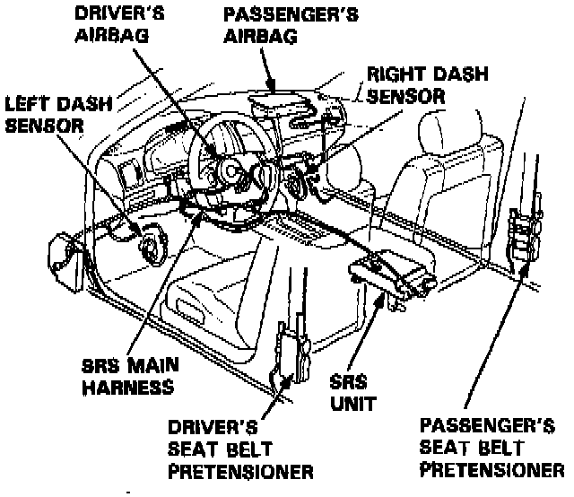
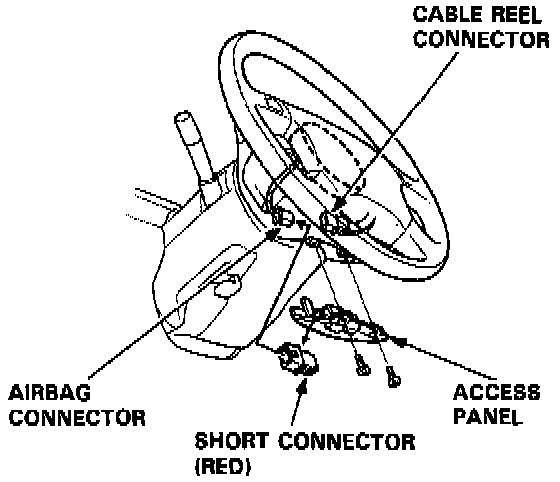
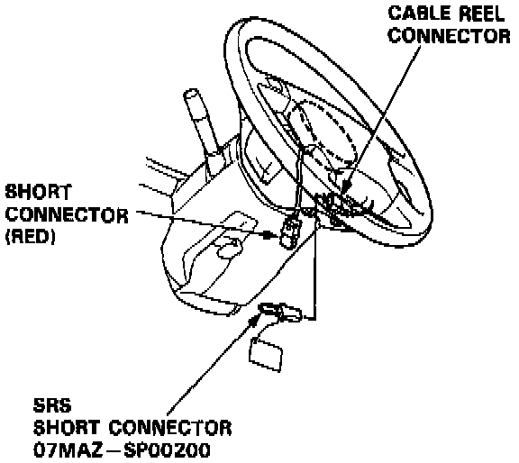
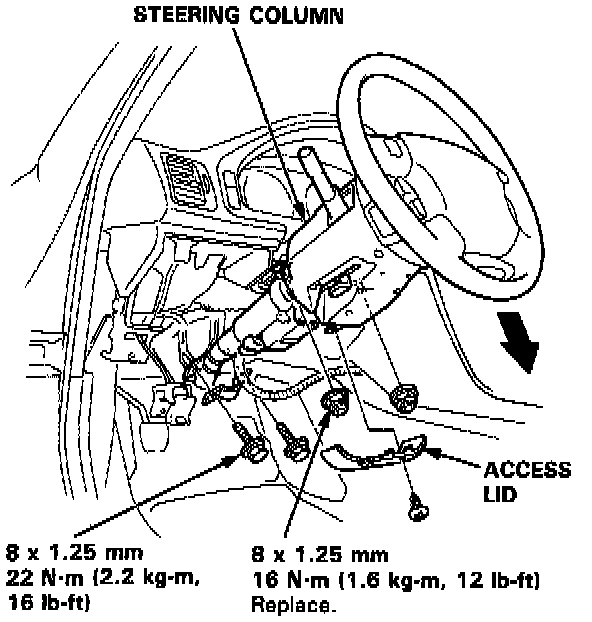
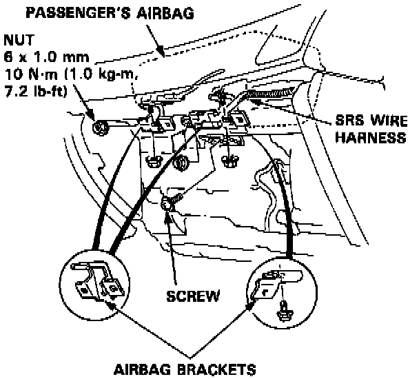
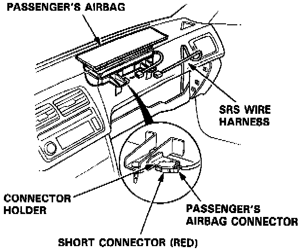
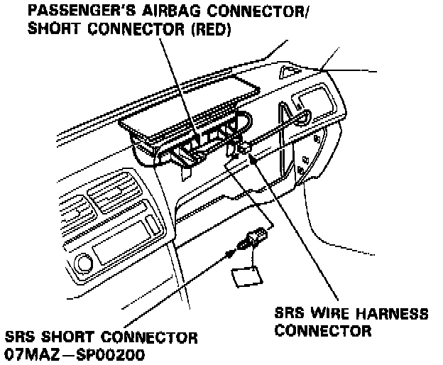
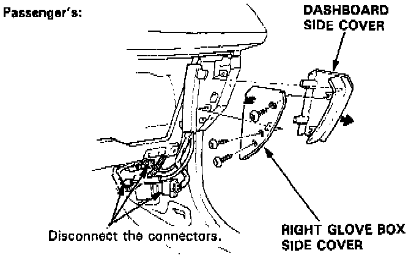
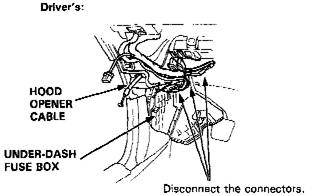
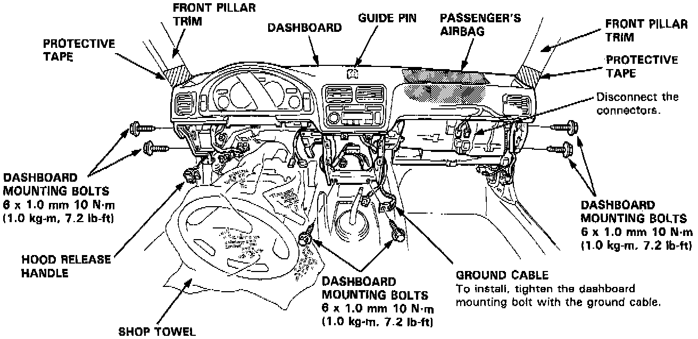

Dash Board Removal and Installation
NOTE: SRS wire harnesses are routed near the dashboard and steering column.
CAUTION:
- All SRS wiring harnesses are covered with yellow outer insulation.
- Before disconnecting any part of the SRS wire harness, install the short connectors.
- Replace the entire affected SRS harness assembly if it has an open circuit or damaged wiring.
1. To remove the dashboard, first remove the:
- Front seats
- Center console panel
- Center armrest
- Stereo radio/cassette
- Glove box lower panel
- Glove box
- Left glove box cover
- Dashboard lower cover
- Kick panel
NOTE: The L and LS model radios may have a coded theft protection circuit. Be sure to get the customer's code number before
- Disconnecting the battery.
- Removing the No. 56 (7.5 A) fuse in the under- hood fuse/relay box.
- Removing the radio.
After service, reconnect power to the radio and turn it on. When the word "CODE" is displayed, enter the customer's 5-digit code to restore radio operation.
2. Lower the steering column.
WARNING: To avoid accidental deployment and possible injury always install the short connector on the airbag connector when the SRS wire harness is disconnected.

NOTE:
- Remove the access panel, then remove the short connector (RED). Disconnect the connector between the airbag and cable reel, then connect the short connector (RED) to the airbag connector.

- Connect the SRS short connector (special tool) to the cable reel connector.

NOTE: To prevent damage to the steering column, wrap it with a shop towel.

3. Remove the nuts and screw, then remove the airbag brackets (passenger's).
WARNING: To avoid accidental deployment and possible injury always install the short connector on the airbag connector when the SRS wire harness is disconnected.

NOTE:
- Disconnect the connector between the passenger's airbag and SRS wire harness. Connect the short connector (RED) to the passenger's airbag connector.

- Connect the SRS short connector (special tool) to the SRS wire harness connector.

4. Remove the right glove box side cover and dashboard side cover.
5. Disconnect the connectors.

6. Disconnect the opener cable from the hood release handle.

7. Remove the six mounting bolts, then lift and remove the dashboard.
CAUTION:
- Use protective tape on the bottom of the front pillar trim.
- When prying with a flat tip screwdriver, wrap it with protective tape to prevent damage.
NOTE:
- Take care not to scratch the dashboard.
8. Installation is the reverse of the removal procedure.
NOTE:
- Make sure the dashboard fits onto the guide pin correctly.
- Before tightening the dashboard mounting bolts, make sure the dashboard wire harnesses are not pinched.